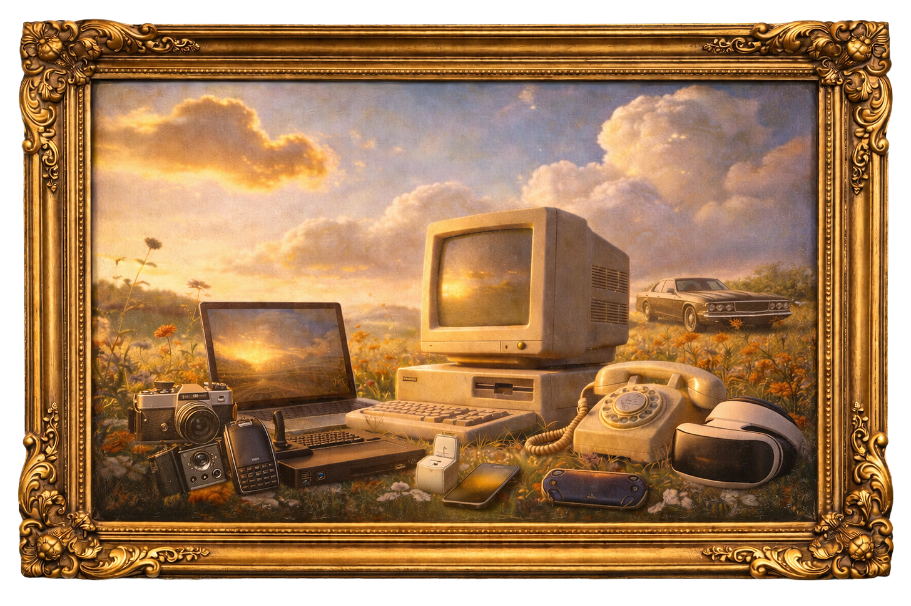
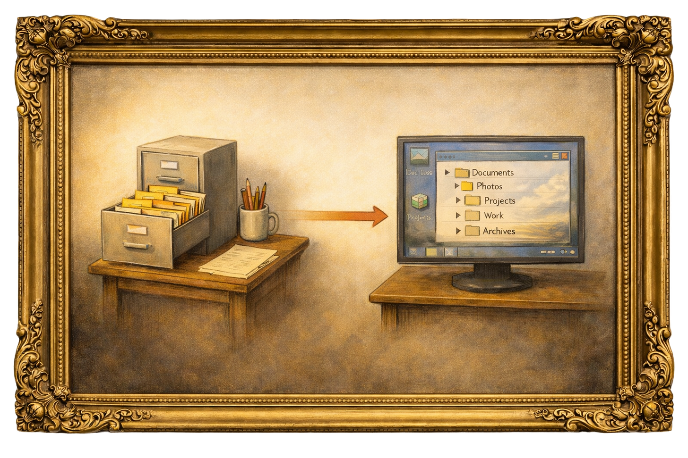
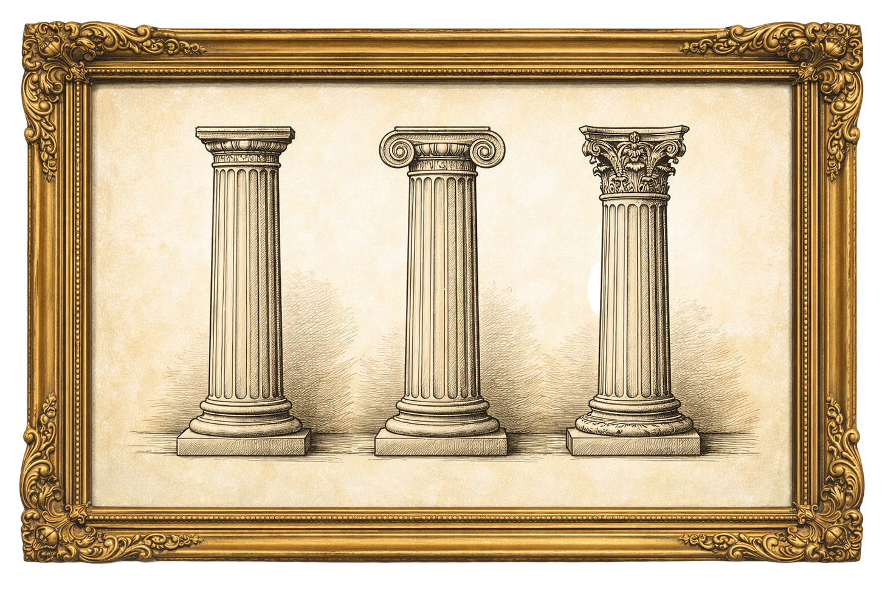

Secondly Manifesto
Your Personal AI, Memory Layer & Physical Existence
We’re living through one of those rare inflection points in history, where an entire paradigm shift happens.
Every time a new medium emerges, it first mimics the old one. Then it finds its true form.

Personal computers started with file systems that mimicked physical filing cabinets: folders, directories, desktops. The internet’s early websites mimicked newspapers and magazines, complete with columns and mastheads. We didn’t yet understand what these mediums wanted to be, and what great new use cases they could enable.
Then something clicked. PCs evolved beyond digital filing cabinets into platforms for creation and computation - instant calculations across thousands of cells, pixel-by-pixel image manipulation, algorithmic music sequencing, database queries in milliseconds. The web broke free from its newspaper skin and became hyperlinked networks where anyone could publish, real-time messaging across continents, collaborative editing of shared documents, and streaming video on demand, replacing scheduled broadcasts.

When smartphones arrived, they initially just ran watered-down versions of desktop software. But the medium demanded something new. Touch-first interfaces. Location-aware services. Apps designed for your pocket, not your desk. The phone became the native device for the internet era, rewiring how humans communicate, organize, and access information.
Now we’re here again. AI is the new medium, and similar to how smartphones were the native device for the internet, we’re about to see AI’s native devices emerge. Everything signals the wave: Meta buying Limitless and now Manus, OpenAI’s upcoming family of devices with Jony Ive, and others racing to claim this space. The first explorers into a new interface don’t always get it right (Rabbit, Humane now, MySpace, Atari, Palm Pilot from the past), but that’s the point. The wave has started.
This comes out of the need for freedom to build freely with the medium, dance with its possibilities - unconstrained by the old paradigms and its ways. And this is exciting because the choices some of us make today will shape society for the upcoming decades. How we build this technology, what forms of communications and data manipulations are possible, how interfaces appear and disappear, who owns what, what values we embed into it: these decisions matter, and we have a white-clean canvas to paint our vision.
This is it. This is our moment.
We’re building Secondly because the next great consumer company isn’t a new app. It’s a new presence.
Today, AI is brilliant but episodic. You open a chat, you explain yourself, you get an answer, and the moment ends. It’s like having a genius friend who gets amnesia every time you walk out of the room. This isn’t because AI is limited. It is because we’re forcing this new medium into an old container called the session. We treat AI like a website you visit or a tool you query.
But if AI is a new medium, its native form won’t be a better chatbot. It will be continuity.
Secondly flips the model. Your AI stops being a destination you visit and becomes a constant that lives with you. It is not trapped inside one app or one browser tab. It flows across every surface you use, from your phone and laptop to your messages and the physical world around you.
Wherever you are, it is there. It sees enough to be relevant and remembers enough to be personal. It doesn’t wait for a prompt because it carries your context forward. It knows what you’re working on, who you’re talking to, and exactly what you meant when you said “the thing.”
When you bridge that gap, something fundamental changes. Your AI stops being software you use and becomes an extension of you. It becomes a second self that knows your world and can act inside it.
To actualize our vision for the future, we build upon three pillars.
Three Pillars: Context, Ownership & Hardware

Pillar 1: Context - Your AI is brilliant but blind
Today’s AI models are insanely smart. Some say they’re approaching PhD-level intelligence. But intelligence without context is useless.
Imagine running into Einstein on the street. Ask him to explain quantum mechanics or derive the theory of relativity, and he’ll blow your mind. But ask him about your life, your projects, your relationships, and he can’t help you. He doesn’t know anything about your life or your circumstances, so despite his genius, he’s useless to you at that moment.
That’s exactly where we are with AI today.
Quite often, when you interact with current AI products, you have to explain and re-explain everything. Long prompts, desperate context-setting, starting from zero. And even then, you might not get everything right in there.
Your AI doesn’t know about the conspiracy theory rabbit hole you went down last night at 2am. It doesn’t know about the inside jokes and pranks you like to play with your best friend. It doesn’t know that when you say ‘the thing,’ you mean that project you’ve been obsessing over for weeks. You spend 4-7 hours a day pouring your life into your phone, yet your AI is completely blind to all of it.
Intelligence is a commodity. Memory across your entire existence is the real thing.
Pillar 2: Ownership - Own Your Second Self
As Artificial Intelligence advances and gains full context of your life, it will become indistinguishable from you. It will think like you, act on your behalf, know things about you that no one else knows: not your partner, not your closest friends. Your secrets, your fears, your ambitions, the thoughts you’ve never spoken aloud.
This raises the question: who owns your second self?
Right now, we’re careening toward a dystopian future where OpenAI, Google, Meta (the big tech companies) own both the models AND your personal data. You’ll be “renting” your AI, never truly owning it. Always at the mercy of their terms, their policies, their business models.
And this is not a “maybe” future. It is the reality already.
For the past 20 years, we’ve been living in what we call the “Privacy Wild West.” We gave away our data to corporations without thinking. We handed over everything (photos, conversations, memories) to companies that could read it, use it, or hand it over with a legal request, not realizing what we were surrendering.
In 100 years, our belief is that people will look back at this era and ask: “How did they live like that? How did they give corporations the keys to the most sensitive information in their lives?”
And this is our cultural bet - that there’s another path. A future where you own both the inference and your data. Where your AI is truly yours.
This is civilization-level critical, but this is also not altruism on our end - on the contrary, we believe this is one of the biggest consumer plays one company can make. With the upcoming shift - ownership will matter more and more. This is no longer about privacy, it’s about property, about freedom of self.
Owning your second self, your personal AI - is a must.
Pillar 3: Hardware - Designing a New Operating System
Simply put, we are physical human beings, living in the physical world. Thinking you can build an omnipresent entity in a person’s life without building hardware is delusional.
Forcing ourselves to build software for old hardware is like trying to build Uber in a world of personal computers, or Twitter in the era of printed press. It doesn’t work, the medium just doesn’t enable it - and it misses the point. Alan Kay’s “People who are really serious about software should make their own hardware.” is more relevant than it has ever been.
The phone was designed for the internet era. Touch screens, app grids, notifications: all built for a world of manual human interaction. It wasn’t designed for background agents working extra hours for you, doing things on your behalf, delivering value while you sleep. But AI is a fundamentally different medium. It doesn’t need you to tap through menus or swipe between apps. It needs to see, understand, and act.
So we’re building from first principles. Hardware to software, bottom up. A device that embraces what’s possible with AI as the foundation. Always-on vision. Proactive intelligence. Action-taking capability.
That will incorporate a new operating system for your intelligence. An OS for your extension of self that lives everywhere: phone, home, car, wearables, every surface you touch.
The memory layer. The personalization infrastructure. The embedded device that lets AI actually co-exist with you in the physical world.
What We’re Building
Our vision is to build an omnipresent AI entity in every person’s life. That entity will exist across any surface you do, physical and digital as one.
It will build up a growing memory layer of YOU through observing your life. That means it will know you better than anyone else, be proactive, present, and relevant. And it will unlock entirely new forms of interaction we can’t even imagine right now, all built on top of this presence and memory operating system.
Through all of it, we fundamentally disagree with the previous way of building technology: rented, used by tech companies for profits. This is not altruism. It is a bet on the future market. We are convinced that the era of the user as a ‘product’ is ending. With the upcoming shift, ownership will matter more and more for individuals, like freedom of speech, property rights, etc.
The Hardware (Announced, In Production)
We started with a simple insight: the best way to give AI context about your life is to let it observe it. And where do you currently exist 4-7, even 8 hours a day? Your phone.
So - three months ago, we announced our hardware: a small device that attaches to your iPhone via USB-C, can see your screen and take actions on your phone - this allow your AI to continually observe and build the memory of you based on your digital usage - who are you talking to, what things you’re interested right now, etc. The response broke the internet.
Now we’re working on production. Meeting with factories around the world, testing plastics and textures, doing durability tests. Building a production-quality device that will ship with a mobile app and bring your AI to your phone.
We might decide to ship a dev kit sooner, but regardless - we’re not waiting to start delivering value.
The Mac App & Memory OS (Launching Soon)
While we are working on getting the hardware produced, we will be releasing our Mac app first. This is in part align with our local-first approach, an app that will later also serve as your backend server, and because on Mac, permissions are more open and we can start building your second self today. We can deploy our multimodality-based memory system: taking inputs from your screen, audio, text, and files to build a complete understanding of your digital life. A 24/7 timeline of everything you do. Your second brain, always learning, always there.
Offline & The Private AI Cloud
We believe everything should be able to run locally if you choose to. Our backend will be distributed to you to run on your home computer or server - but we are also aware of the great benefits of the cloud (not needing good hardware at home, for example), hence we are working hard to ship a private cloud architecture - where we provide you top GPU performances, backups, availability - while keeping your data encrypted, so even we can’t see it.
The ownership remains yours. You can always take your data home, run the backend yourself on your own computer, without needing us at all.
We will share more about our architecture & deployment very soon.
How It All Comes Together
Your brain currently has 50 tabs open. You’re trying to remember to text your mom back, wondering if you ever sent that file to Mark, and holding onto a vague reminder to buy flights for October. These are “open threads”, background processes that drain your energy.
Secondly closes those loops.
It tracks the context that usually slips through the cracks. When you open a chat with a friend you haven’t spoken to in months, Secondly whispers the context you’ve forgotten: “You promised to send him that article about architecture last time,” or “Ask how his surgery went.” It turns a cold interaction into a warm, continuous connection.
It holds your mental “to-do” list so you don’t have to. When you mention in passing, “I need to get a gift for the anniversary,” Secondly logs it. It doesn’t nag you; it waits until you’re browsing online or, in the future, near a store to nudge you. It manages the loose ends of your existence.
We’re experimenting with dynamic UIs, widgets, and extended surfaces that let these interactions flow naturally. We’re working on a memory paper to share our approaches to multimodality-based memory. Research we’ll be sharing with the world soon.
This is just the beginning. The interactions that’ll be possible soon are crazy, it will feel like magic - and we hope to bring y’all along for the ride.
Your second self, your Secondly.
— Secondly Team
P.S. - If you want to be among the first to get your hands on Secondly, join our waitlist at Secondly.com